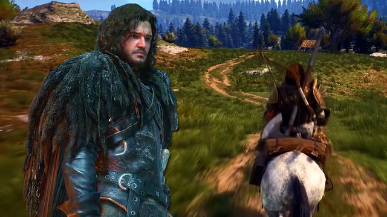
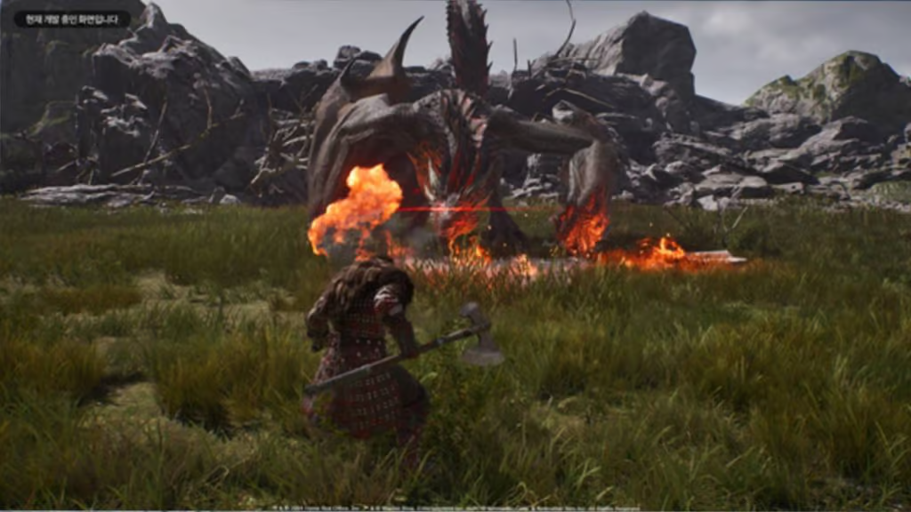

Siêu phẩm lấy chủ đề Game of Throne ra mắt demo miễn phí, game thủ cần nhanh tay để trải nghiệm
Phiên bản demo miễn phí của tựa game này kéo dài không quá lâu.
Tựa game đang được nhắc tới trong câu chuyện là Games of Thrones Kingsroad - một bom tấn rất được các fan của series Games of Thrones nổi tiếng chờ đợi.
Ban đầu, các game thủ có thể mường tượng về việc Games of Thrones Kingsroad sẽ là một trò chơi nhập vai hành động mang yếu tố hơi u ám. Thế nhưng quan điểm này dường như đã có phần hơi sai lầm, nhất là khi không ít người chơi đã có cơ hội trải nghiệm sớm trò chơi này sau khi Games of Thrones Kingsroad ra mắt một phiên bản demo giới hạn thời gian trên Steam.
Theo đó, phiên bản demo lần này của Games of Thrones Kingsroad hoàn toàn miễn phí và mang tới cho các game thủ cơ hội trải nghiệm bom tấn này từ nay cho tới ngày 4/3/2025.
Thông qua một số ấn tượng ban đầu, Games of Thrones Kingsroad dường như sẽ là một trò chơi thế giới mở, hướng đến cả việc lên sóng trên mobile tương tự một số dự án thịnh hành của hiện tại như Genshin Impact hoặc Infinity Nikki. Xét qua về mặt đồ họa cũng như thiết kế, bom tấn này cũng chịu ảnh hưởng lớn từ Assassin's Creed Valhalla và Monster Hunter.
Trong Games of Thrones Kingsroad, các game thủ sẽ vào vai đứa con hoang của một gia đình bị lãng quên ở phía bắc Westeros. Được Jon Snow hiệu triệu, người chơi sẽ phải lang thang trong trò chơi thế giới mở này để cố gắng tập hợp lục địa chống lại mối đe dọa của White Walkers. Các địa điểm mang tính biểu tượng của series Game of Thrones cũng xuất hiện và bên cạnh đó, cũng sẽ có những địa điểm hoàn toàn mới mẻ được thêm vào. Người chơi cũng có thể chọn class nhân vật cho riêng mình như Hiệp Sĩ, Sát Thủ...

Phiên bản chính thức của Games of Thrones Kingsroad dự kiến sẽ ra mắt vào quý 2 năm nay, nhưng hiện vẫn chưa có mốc thời gian cụ thể.